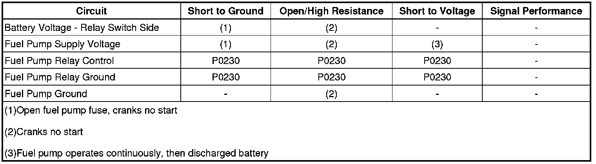

Fuel Pump Electrical Circuit Diagnosis
Fuel Pump Electrical Circuit Diagnosis
Diagnostic Instructions
* Perform the Diagnostic System Check - Vehicle (Initial Inspection and Diagnostic Overview) prior to using this diagnostic procedure.
* Review Strategy Based Diagnosis (Initial Inspection and Diagnostic Overview) for an overview of the diagnostic approach.
* Diagnostic Procedure Instructions (Initial Inspection and Diagnostic Overview)provides an overview of each diagnostic category.
Diagnostic Fault Information

Circuit/System Description
The control module enables the fuel pump relay when the ignition switch is turned ON. The control module will disable the fuel pump relay within 2 seconds unless the control module detects ignition reference pulses. The control module continues to enable the fuel pump relay as long as ignition reference pulses are detected. The control module disables the fuel pump relay within 2 seconds if ignition reference pulses cease to be detected and the ignition remains ON.
Diagnostic Aids
The following conditions may cause the fuel pump fuse to open:
* The fuse is faulty.
* There is an intermittent short to ground in the supply voltage circuit of the fuel pump.
* The fuel pump has an intermittent internal condition.
Reference Information
Schematic Reference
Engine Controls Schematics (Electrical Diagrams)
Connector End View Reference
Component Connector End Views (Connector Views)
Electrical Information Reference
* Circuit Testing (Component Tests and General Diagnostics)
* Connector Repairs (Component Tests and General Diagnostics)
* Testing for Intermittent Conditions and Poor Connections (Component Tests and General Diagnostics)
* Wiring Repairs (Component Tests and General Diagnostics)
Scan Tool Reference
Control Module References (Programming and Relearning)for scan tool information
Special Tools Required
J 43244 Relay Puller Pliers
Circuit/System Verification
With the ignition ON, engine OFF, command the fuel pump relay ON and OFF several times using the scan tool output control function. You should either hear or feel the relay click and the fuel pump should turn ON and OFF with each command.
If the fuel pump operates continuously, test for a faulty relay or a short to voltage in the supply voltage circuit of the fuel pump.
Circuit/System Testing
1. With the ignition OFF, remove the fuel pump relay from the rear electrical center.
2. Test for less than 5 ohms of resistance between the ground circuit and ground.
• If greater than the specified range, test the ground circuit for an open/high resistance.
3. Connect a test lamp between the fuel pump relay control circuit and the ground circuit. Command the fuel pump relay ON and OFF with a scan tool. The test lamp should turn ON and OFF when changing between the commanded states.
• If the test lamp is always ON, test the control circuit for a short to voltage. If the circuit tests normal, replace the ECM.
• If the test lamp is always OFF, test the control circuit for a short to voltage. If the circuit tests normal, replace the ECM.
4. Inspect the fuel pump fuse.
• If the fuel pump fuse is open, test for the following conditions:
* A short to ground in the relay switch B+ circuit
* A short to ground in the supply voltage circuit of the fuel pump
• If the above circuits test normal, replace the fuel sender.
5. Verify that a test light illuminates between the B+ circuit and ground.
• If the test lamp does not illuminate, test the B+ circuit for an open/high resistance.
6. Connect a 15A fused jumper wire between the B+ circuit and the supply voltage circuit of the fuel pump. Verify the fuel pump is activated.
• If the fuel pump does not activate, test for the following conditions:
* An open/high resistance in the supply voltage circuit of the fuel pump
* An open/high resistance in the ground circuit of the fuel pump
• If the above circuits test normal, replace the fuel sender.
7. If all circuits test normal, test or replace the fuel pump relay.
Component Testing
1. Measure for 70-100 ohms of resistance between terminals 85 and 86 of the fuel pump relay.
• If the resistance is not within the specified range, replace the fuel pump relay.
2. Measure for infinite resistance between the following terminals of the fuel pump relay:
* 30 and 86
* 30 and 87
* 30 and 85
* 85 and 87
• If continuity is detected, replace the fuel pump relay.
3. Connect a 15A fused jumper wire from the positive terminal of the battery to relay terminal 85. Connect a jumper wire from the negative terminal of the battery to relay terminal 86. Measure for less than 2 ohms between terminals 30 and 87 of the relay.
• If the resistance measures more than 2 ohms, replace the fuel pump relay.
Repair Instructions
Perform the Diagnostic Repair Verification (Verification Tests) after completing the diagnostic procedure.
* Control Module References (Programming and Relearning)for ECM replacement, setup, and programming
* Primary Fuel Tank Module Replacement (Primary Fuel Tank Module Replacement)